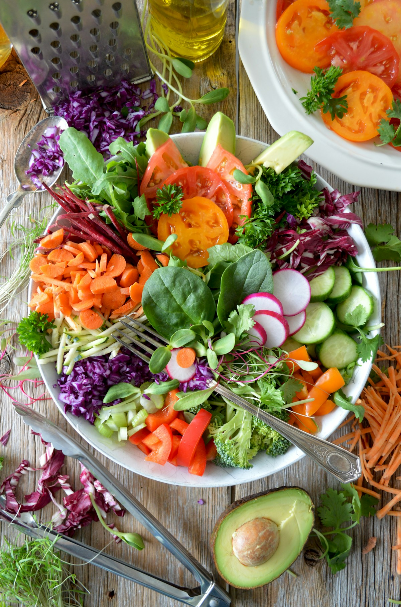
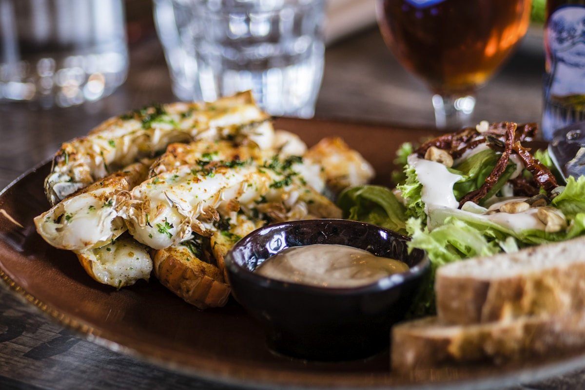
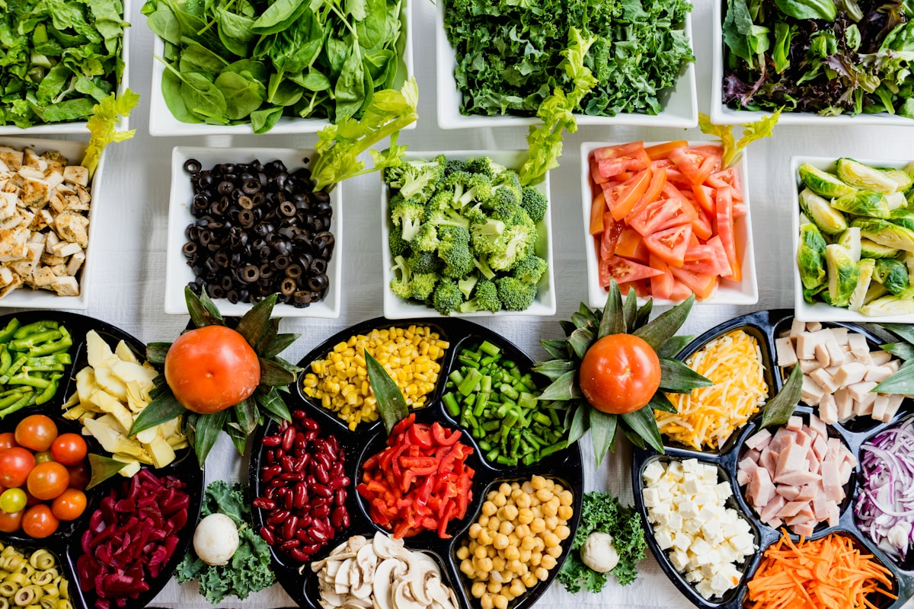

The DinnerChapter Culinary Journal
Explore deep-dive technical research on flavor thermodynamics, emulsion stability, seasonal menu architecture, and the art of the modern supper club.
 Thermodynamics & Searing
Thermodynamics & Searing
The Science of the Maillard Reaction: Protein Pyrolysis & Searing Mechanics
An exhaustive investigation into amino acid-reducing sugar kinetics, surface moisture thermodynamics, and cast iron thermal mass management.
 Supper Club Hospitality
Supper Club Hospitality
The Art of the Modern Supper Club: Multi-Course Narratives & Tablescapes
Discover how to orchestrate pacing, acoustic lighting, communal seating, and sensory menus for unforgettable evening dinner gatherings.
 Sauce Chemistry
Sauce Chemistry
Emulsion Chemistry in Evening Sauces: Hollandaise & Velvety Reductions
A molecular analysis of amphiphilic lecithins, fat-in-water suspension physics, pan deglazing, and heat-induced emulsion failure prevention.

Seasonal AgronomyFarm-to-Table Seasonal Harvest: Autumn & Winter Heritage Root Menus
Exploring cold-induced starch-to-sugar enzymatic conversion, soil terroir, heirloom brassicas, and winter menu orchestration.

Flavor ArchitectureBalancing the Five Flavor Profiles: Salt, Acid, Fat, Heat & Umami
How gustatory neurobiology and chemical suppression/synergism create multidimensional balance across dinner courses.

Zero-Waste CulinaryThe Zero-Waste Dinner Party: Mise-en-Place & Creative Upcycling
Step-by-step techniques to extract deep flavor from vegetable scraps, create roasted stocks, infused oils, and host sustainable dinners.